OCT. 26 · Brand Bible · 29 Oct 2026
คัมภีร์แบรนด์ OCT. 26 (แบบเดียวกับ ASE)
ทำ Brand Bible ใหม่ตามโครงของ ASE: A4 แนวนอน 37 หน้า แบ่ง 2 ภาค ภาค A คือกลยุทธ์ (ตอนนี้เราอยู่ตรงไหน คู่แข่ง จุดต่าง) ภาค B คือหน้าตาแบรนด์ (โลโก้ ตัวอักษร สี แพตเทิร์น รูป และของจริงที่ใช้) เนื้อหามาจาก Brand Book v2 กับของที่ทำไปแล้ว ไม่ได้เปลี่ยนโลโก้หรือสี
หน้าตาบางหน้า
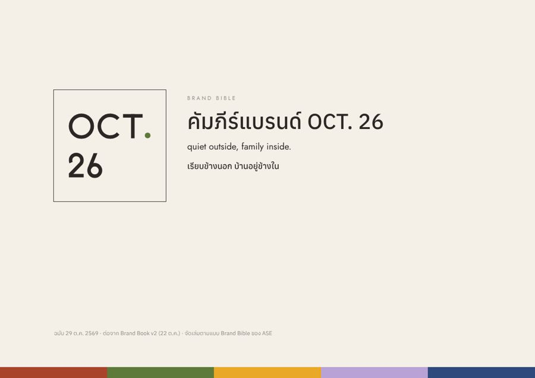
01 ปก
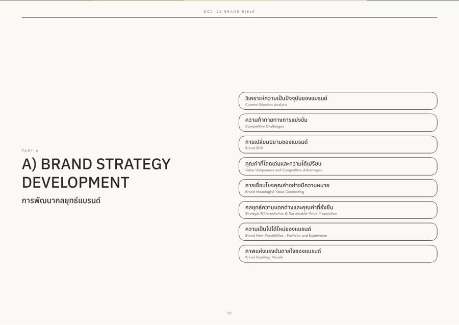
02 ภาค A กลยุทธ์ หัวข้อ 8 เรื่อง
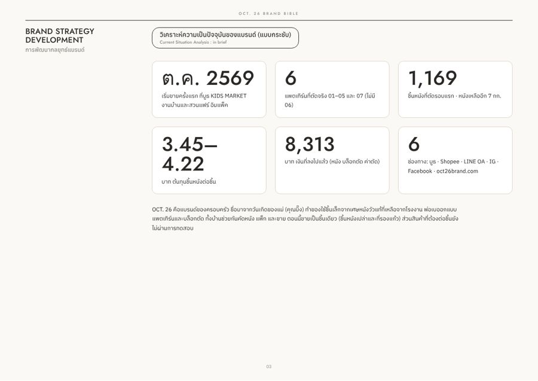
03 สถานการณ์ตอนนี้ ตัวเลขสำคัญ
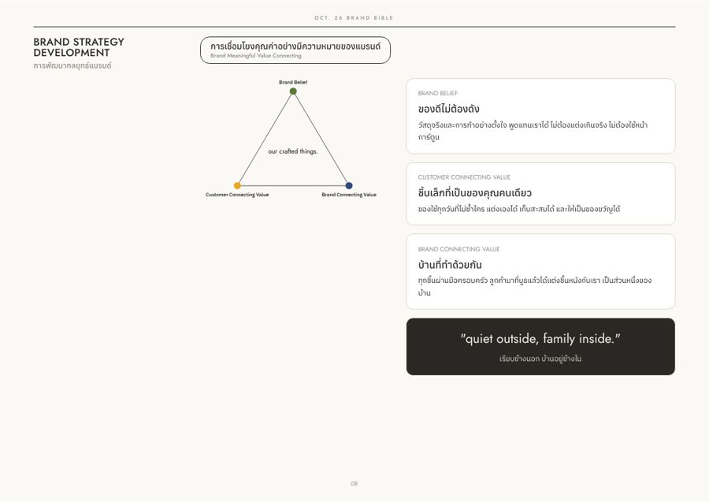
08 สามเหลี่ยมคุณค่า
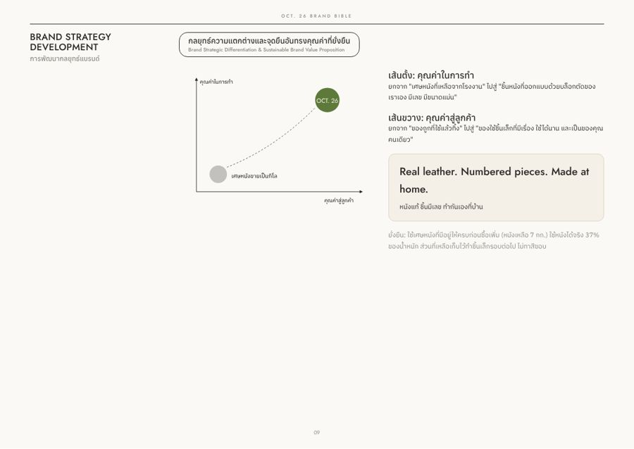
09 จุดต่าง และประโยค Real leather. Numbered pieces. Made at home.
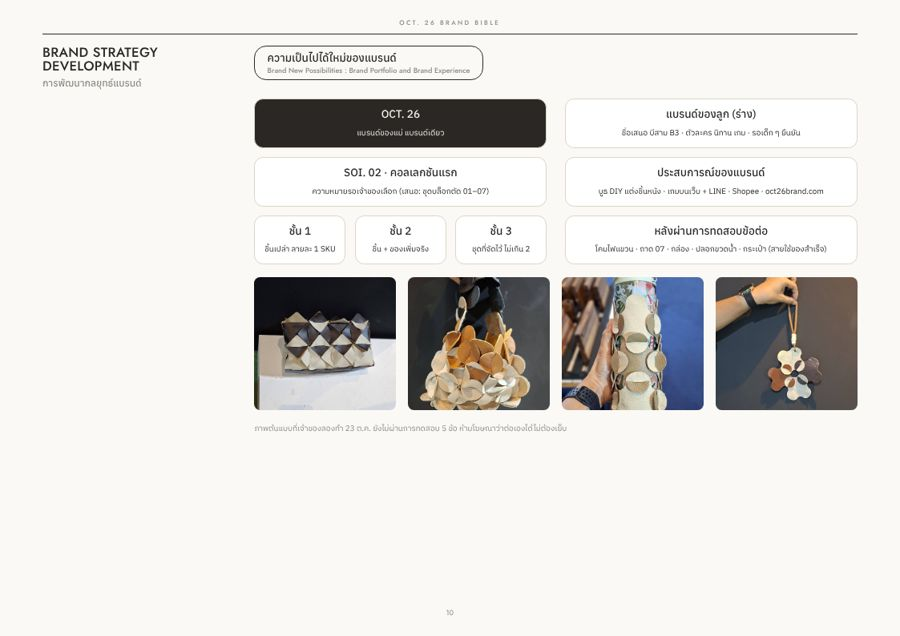
10 ทางที่เป็นไปได้ (ต้นแบบยังไม่ทดสอบ)
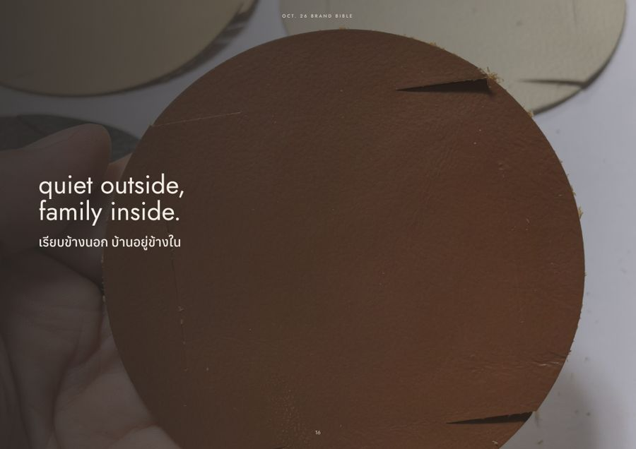
16 quiet outside, family inside.
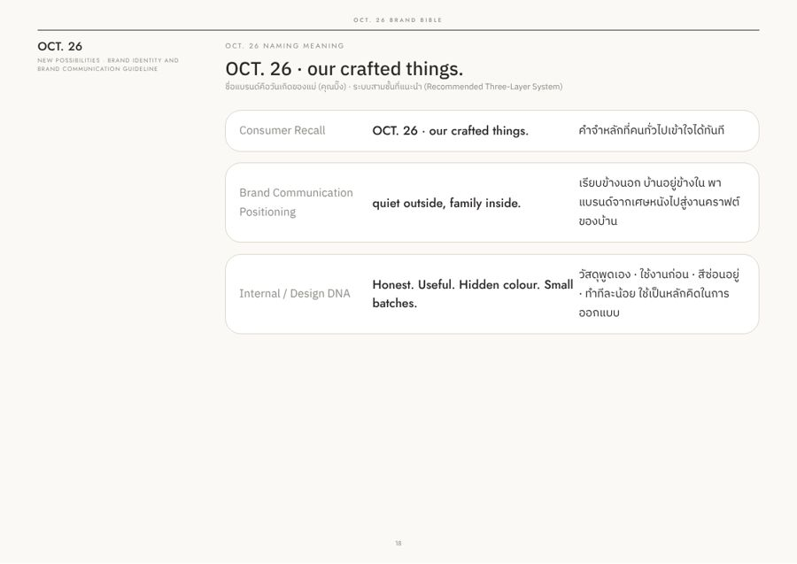
18 ระบบชื่อ 3 ชั้น
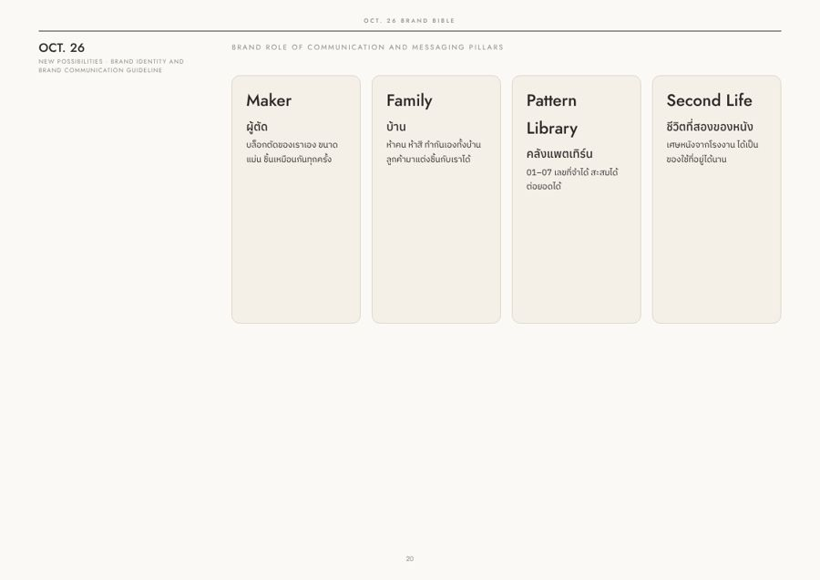
20 บทบาท 4 ข้อ Maker · Family · Pattern Library · Second Life
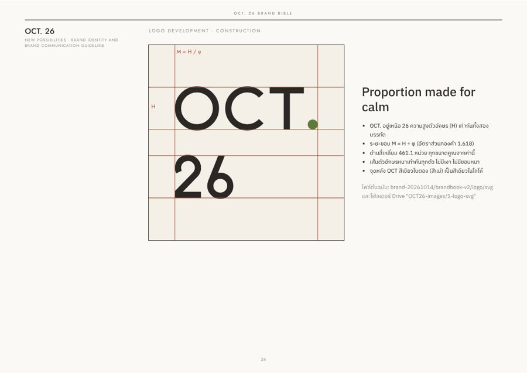
24 สัดส่วนโลโก้
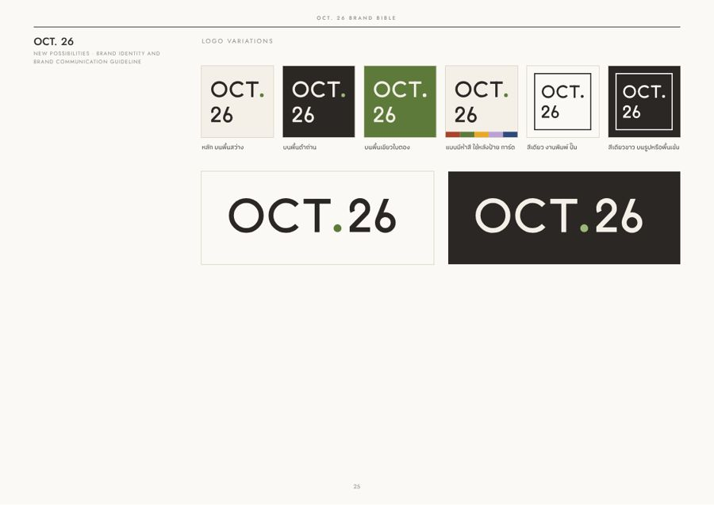
25 โลโก้ทุกแบบ
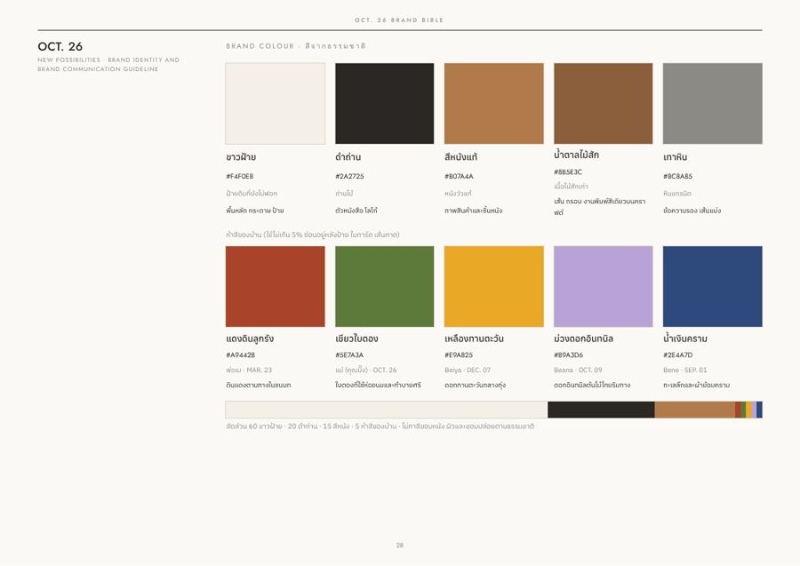
28 สีหลัก 5 + สีครอบครัว 5
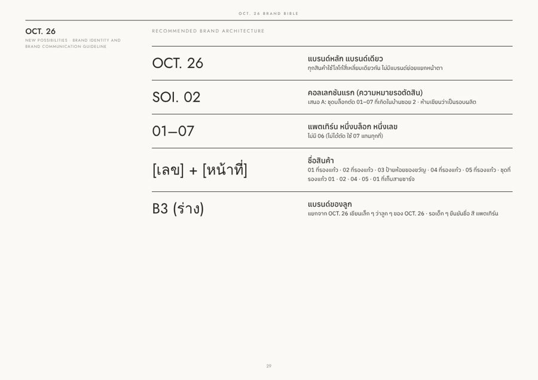
29 โครงสร้างแบรนด์
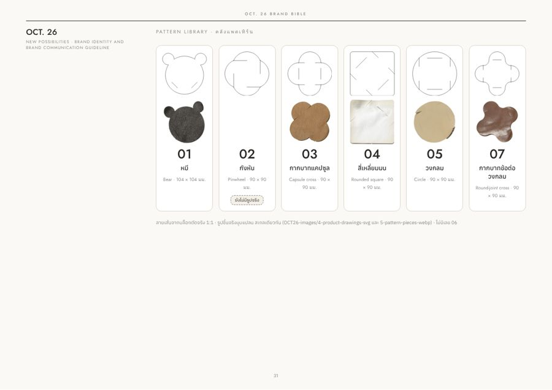
31 คลังแพตเทิร์น 01–07
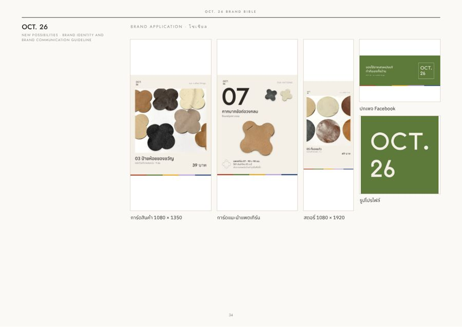
34 ใช้จริงบนโซเชียล
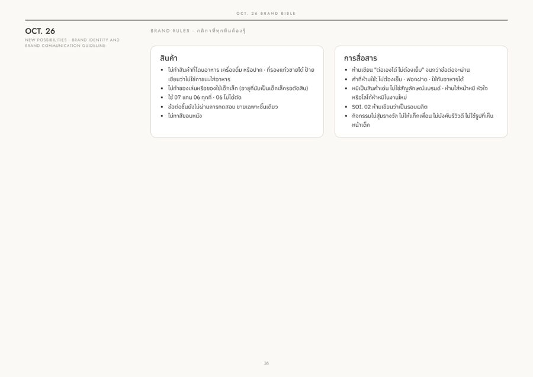
36 กติกาที่ห้ามพลาด
ลำดับหน้า
| หน้า | เรื่อง |
|---|
| 1–10 | ภาค A: สถานการณ์ (ย่อ/ละเอียด) · คู่แข่ง 3 กลุ่ม · การเปลี่ยนภาพแบรนด์ · จุดเด่น 5 ข้อ · สามเหลี่ยมคุณค่า · จุดต่าง · ทางที่เป็นไปได้ |
| 11–14 | ภาพแรงบันดาลใจ: วัสดุพูดเอง · ชิ้นมีเลข · ทำกันเองที่บ้าน |
| 15–23 | ภาค B: ประโยคหลัก · แนวคิด · ระบบชื่อ · ความหมาย OCT. / 26 / จุดสีเขียว · บทบาท 4 ข้อ · แนวคิดโลโก้ |
| 24–32 | สัดส่วนโลโก้ · แบบโลโก้ · ระยะว่างและข้อห้าม · ตัวอักษร · สี · โครงสร้างแบรนด์ · โลโก้บนพื้นต่าง ๆ · คลังแพตเทิร์น · กติการูป |
| 33–37 | ของจริง: งานพิมพ์ · โซเชียล · เว็บและบูธ · กติกาแบรนด์ · ปกหลัง |
ที่ต้องเช็ก
- ตัวเลขหน้า 3 (ชิ้นที่ต้องขาย ต้นทุน ราคา) ยังตรงกับของจริงไหม
- หน้า 5 เรื่องคู่แข่ง ผมเขียนจากภาพรวมตลาด ไม่ได้สำรวจร้านจริง ถ้ามีชื่อร้านที่อยากเทียบ บอกได้
- SOI. 02 ยังเขียนว่า “ความหมายรอตัดสิน” (เสนอ A: ชุดบล็อกตัด 01–07) รอพ่อเบเลือก
- 02 กังหัน ยังไม่มีรูปจริง มีป้ายบอกในหน้า 31 พอถ่ายแล้วส่งมา ผมใส่ให้
- รูปต้นแบบในหน้า 10 ติดป้ายว่ายังไม่ได้ทดสอบ
- บีสาม (แบรนด์ลูก) ใส่ไว้เป็นร่าง รอเด็ก ๆ ยืนยัน
ไฟล์อยู่ที่ไหน
- PDF: OCT26-Brand-Bible.pdf (13 MB, 37 หน้า) ส่งในแชตแล้ว ไฟล์ใหญ่เกินจะอัปโหลดผ่านตัวเชื่อม Drive ได้ ลากใส่โฟลเดอร์ “OCT. 26 ไฟล์งาน” เองได้เลย
- repo:
brand-20261014/brand-bible/ (build.py สร้างหน้า · render.cjs ทำ PDF และรูปตัวอย่าง · assets/ รูปที่ใช้)
- แก้ข้อความหรือรูป แล้วรัน build.py กับ render.cjs ใหม่ได้ PDF ฉบับใหม่ทันที
ต่อไป
- พ่อเบกับคุณบิ๊งอ่าน PDF แล้วบอกหน้าที่อยากแก้
- เลือกความหมาย SOI. 02 แล้วผมแก้หน้า 10 และ 29
- ได้รูปจริง 02 และชื่อตัวละครของเด็ก ๆ แล้ว ทำฉบับถัดไป